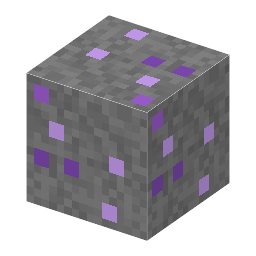

説明
①子ども 石の中に紫や緑のつぶが入った鉱石。掘ると蛍石が出る。
②学生 方鉛鉱と同じ深さ（Y −16〜64）の石・深層岩に出る。方鉛鉱より少ない。石のツルハシ以上。シルクタッチなら鉱石のブロックのまま。
③大人 蛍石は、熱い水が岩の割れ目を通ってできた鉱脈（熱水鉱脈）に、方鉛鉱・閃亜鉛鉱といっしょに出ることが多い。鉛や亜鉛の鉱山で蛍石も取れる。
④ガチ 今の蛍石の多くはフッ酸の原料になり、フッ素の化学（フッ素樹脂・冷媒・半導体のエッチングガス）のほとんどがここから始まる。
作り方
（作り方のレシピは無い：拾う・掘る・ほかの方法）
使い道
（このアイテムを使うレシピは無い）